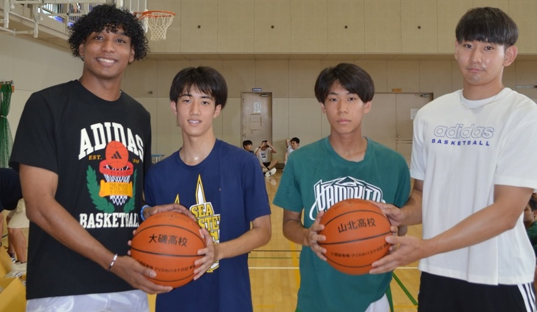
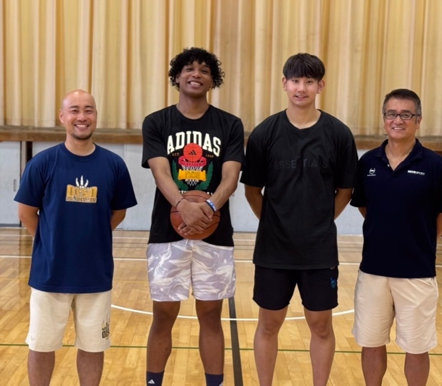

「足りない分は、顧問の自腹」を変えたい —— 小酒部泰暉と、母校へ届けたボール
2024年8月。B.LEAGUE・アルバルク東京の小酒部泰暉と、バスケ動画クリエイター「クリスのバスケ日記」のクリスが、校名入りのバスケットボールを高校生たちに手渡した。2人にとって、初めてのボール寄贈だ。

県大会2回戦止まりの、2人だった
2人は神奈川県立山北高校の同級生。ただし、当時から有望だったわけではまったくない。小酒部は県大会2回戦止まりの無名選手で、クリスにいたっては、バスケットボールを始めたのが高校2年生だ。
その小酒部は神奈川大学で才能を開花させ、3年次に関東大学リーグ1部で得点王。学生選抜とU22日本代表に選ばれ、2019年12月にアルバルク東京の特別指定選手、2021年にプロ契約を勝ち取り、主力へと駆け上がった。クリスはNBA解説とバスケ文化の紹介を軸にした動画クリエイターとして、競技経験のない層にまでバスケの魅力を届けている。
プロとして、クリエイターとして。あの頃は無名だった2人が、高校バスケの体育館に戻ってきた。
部活のリアル —— 足りない分は、顧問の自腹
高校の部活動は部費で運営されている。しかし実際には、備品が足りない分を顧問の先生が自腹で補うことは、決して珍しくない。2人もまた、そうやって支えてもらった側だった。
だからこの企画の宛先は、生徒だけではない。寄贈によって浮いた予算を、先生方にはもっと子どもたちのために使ってほしい。そして「あの時、あの子たちを指導してよかった」と思ってもらいたい——それがこのボールに込めた想いだ。

恩師のもとへ、はじめての恩返し
ボールの届け先は、母校・山北高校と、高校時代に2人を指導した恩師・渡邊新一先生のいる大磯高校。あの頃、いちばん近くで支えてくれた人と場所への、はじめての恩返しだ。
県大会2回戦止まりからBリーガーへ。高校2年からバスケを始めてクリエイターへ。目の前でボールを受け取る高校生たちにとって、これほど直接届く実例はない。
一度きりのイベントで終わらせるつもりはない。この日が、恩返しの第一歩になる。